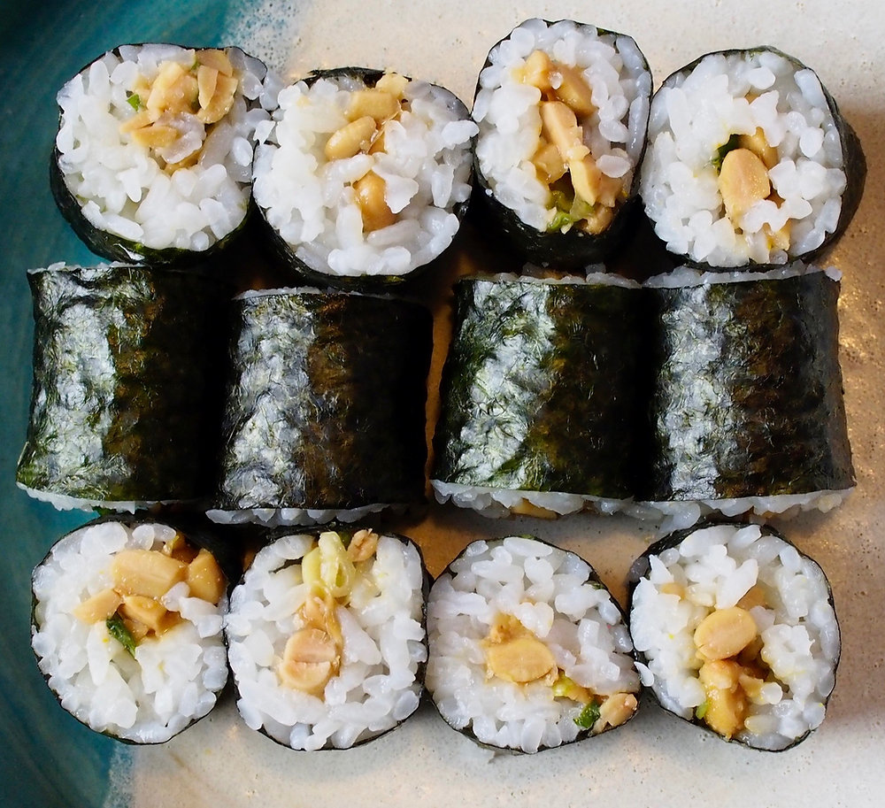

Natto Maki Recipe

Natto maki is one of the popular sushi rolls made by filling natto and sushi rice inside of a nori sheet before rolling it up like a sushi roll.
I will show you how to make them!
Ingredients
Steps
Cut nori sheets in half.
Mix natto with its sauce
Mix the Natto with rice
Roll it into nori to make a sushi roll
Cut into 6-8 equal pieces